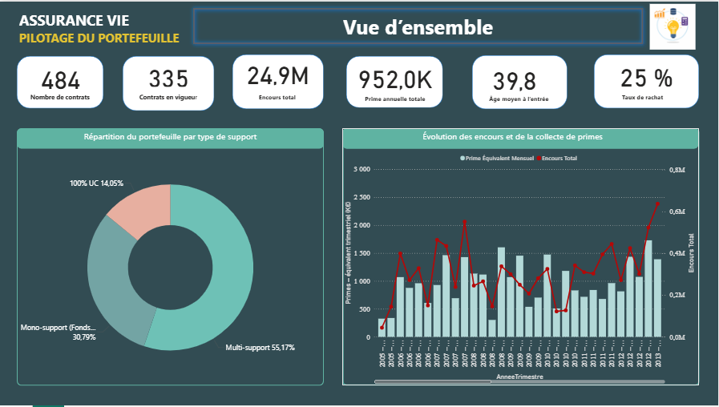

KPI • Qualité des données • Restitution métier — SAS / Excel
Mettre en place une analyse structurée du portefeuille (profil assurés, contrats, encours), afin de produire des indicateurs fiables pour le pilotage et d’identifier des axes de segmentation pertinents.

Contexte & Objectif : Développement d’un dashboard interactif pour le pilotage d’un portefeuille d’assurance vie, permettant de centraliser les indicateurs clés et de faciliter la prise de décision stratégique.
Confidentialité : Le travail initial a été réalisé à partir de données réelles d’entreprise. Pour des raisons de confidentialité, une simulation de données cohérente a été générée afin de reproduire la structure analytique du projet tout en respectant les exigences de protection des données.
Outils : Power BI, Python, Excel
Le document ci-dessous correspond au rendu complet de l’étude, incluant la méthodologie détaillée, les résultats chiffrés et les interprétations.